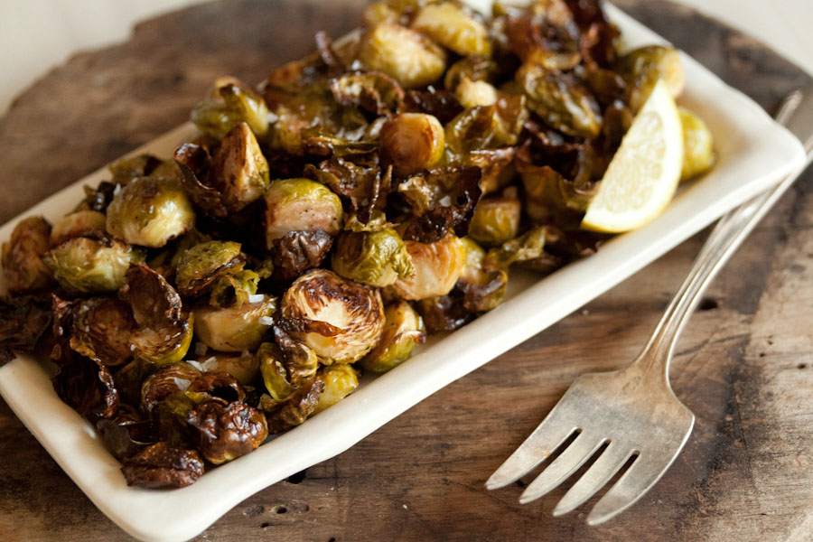

Roasted Brussels Sprouts

Ingredients
1 1/2 pounds Brussels sprouts
3 tablespoons good olive oil
3/4 teaspoon kosher salt
1/2 teaspoon freshly ground black pepper
Directions
Preheat oven to 400 degrees F.
Cut off the brown ends of the Brussels sprouts.
Pull off any yellow outer leaves.
Mix them in a bowl with the olive oil, salt and pepper.
Pour them on a sheet pan and roast for 35 to 40 minutes.
They should be until crisp on the outside and tender on the inside.
Shake the pan from time to time to brown the sprouts evenly.
Sprinkle with more kosher salt (I like these salty like French fries).
Serve and enjoy!